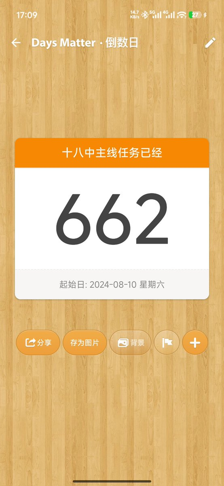

孙悟元
@wuyuandev
@RainEngine2024m 诶，我们同龄诶，我上推还更早一些。。。怎么会这样呢。。。

高坂穗奈雪
@RainEngine2024m
截止到今天，我的学业生涯算是彻底落下帷幕了，想了想充满了遗憾与无奈，和家庭闹了很多矛盾也我自己有很大关系，这 662 天里，有苦有乐，相见是那个夏天，结束也是在那个夏天，高中的生活是最苦最难熬也是最折磨的时光，从 2024 年 8 月 10 日到 2026 年 6 月 3 日，记到 2024 年 1 月份我刚刚注册 https://t.co/EzbGhyofUP